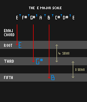
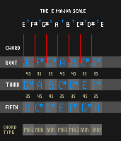

GROWL
I'd rather be playing guitar
 EN
EN
A triad (three note chord) is the simplest chord you can make. We don't consider that two notes held together is really a chord. That's just a harmonised note. It's an odd distinction because that's all three, four and more note chords are too - notes harmonised in a specific arrangement.
So how do we work out what triads exist? Simple, take the current key of a piece of music eg: E major. See here for more on key. The key dictates what notes are going to appear in a piece (for the most part). Knowing the notes, we just need to choose a structure for our chord. Triads use a root note, the note a third away and the note a fifth away. For example, in the key of E major, we make a triad on the E of E-G#-B. You can think of this as two third intervals stuck together; 1-3 and 3-5.
Now we have our structure for a chord, we can take each note that is specified by our key and build a triad from each note. When we do this we use ONLY notes from the key. Hence, note two in EM is an F#. So we'd end up with F#-A-C# if we build a triad from it.
There is an important point here. Because of the pattern of notes in a major scale ie: TTSTTTS the space between the first, third and fifth notes of triads changes. For example in a triad made on E, between the E and G# we have two tones (TT) BUT between the first and third (A) of F#(the second note of the EM scale) we have a tone and a half (TS). Specifically we have a major third interval for the E chord and a minor third interval for the F# chord. This makes the world of difference!
When a triad contains a major third interval between its root note and its third (E-G#) then we say that the chord is major. When the triad contains a minor third in this place (F#-A) then we say the triad is minor.
When we add the final note to the triad, the fifth, we complete the chord. In most cases this note always ends up being the interval of a perfect fifth (7 semitones) from the root note of the chord. That isn't just true for major scales but for minor scales and their derivatives also. Earlier I said that you can think of triads as two intervals of a third stuck together. In most cases these two thirds are of opposing types. If you have a major third between the first two triad notes then you have a minor third between the next two. That's just the way that the numbers work out as a consequence of the pattern of the scale they come from. Let's build ALL the triads from the E major scale.
Did you notice the cheeky chord at the end. It is the only one that doesn't have a perfect fifth and is made of one minor third followed by another. That's a total of 6 semitones and 6 is the number of the beast! I am not even kidding. It is dissonant, very special and known as a diminished triad. Again, this isn't something that a composer has chosen for effect. It is just a result of always building triads from the notes dictated by a scale.
A happy consequence of triads arising from what scales dictate is that if you use the same type of scale, eg: major but in a different key (so C major rather than E major) the triads that form are always the same type in the same order. Thus chord I (from C) is always major, chord IV (from F) is always major, and so is chord V (from G). Chords I,IV and V you say! That's about 50 percent of pop music. Correct! Because then you only need to know major scales and major chords to play it, hence the endless repetition of those songs.
WHAT CAN I DO WITH THIS KNOWLEDGE
First of all, if you want to write a song in a particular key you can now work out all of the simple chords it could use. If you have a melody you have written, figure out what scale it fits and presto, you now know what chords you can play under the melody. Next time you are trying to figure a song out, you don't need to randomly try chords. Get the scale first from the melody, then you can work out the chords.
WHAT'S NEXT
So far we have major, minor and diminished triads. There's a huge difference in the mood of those chords. But in the following article I'll show how you can extend triads with more notes. The chords become more complex, more subtle and consequently enhance the range of emotion we can express with music.
SOME PERSPECTIVE
When I first learned about chords I saw them as concrete. Almost as a law of nature; chords just are certain order of notes. I believe that less now. Now I see them as selections of notes made by a composer to establish a certain structure or perform a certain function. There are certain rules that musicians apply to ease the construction and memorisation of chords, but they aren't (as with many musical ideas) rules not to be broken. A composer might know that chord 2 in E major is an F# minor chord, but that doesn't mean he HAS to use it. It also doesn't mean he cant modify it.